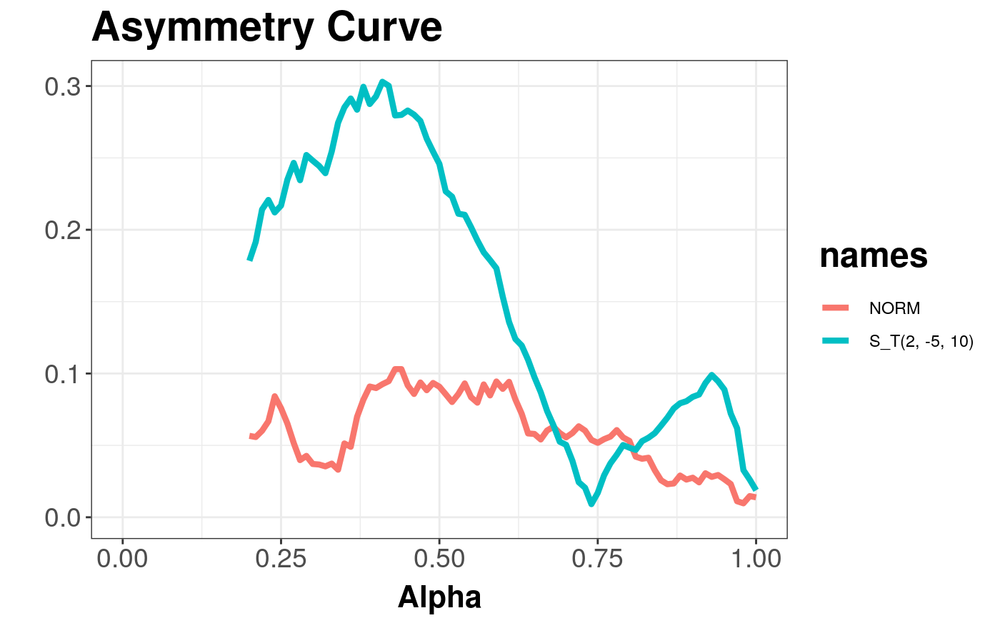
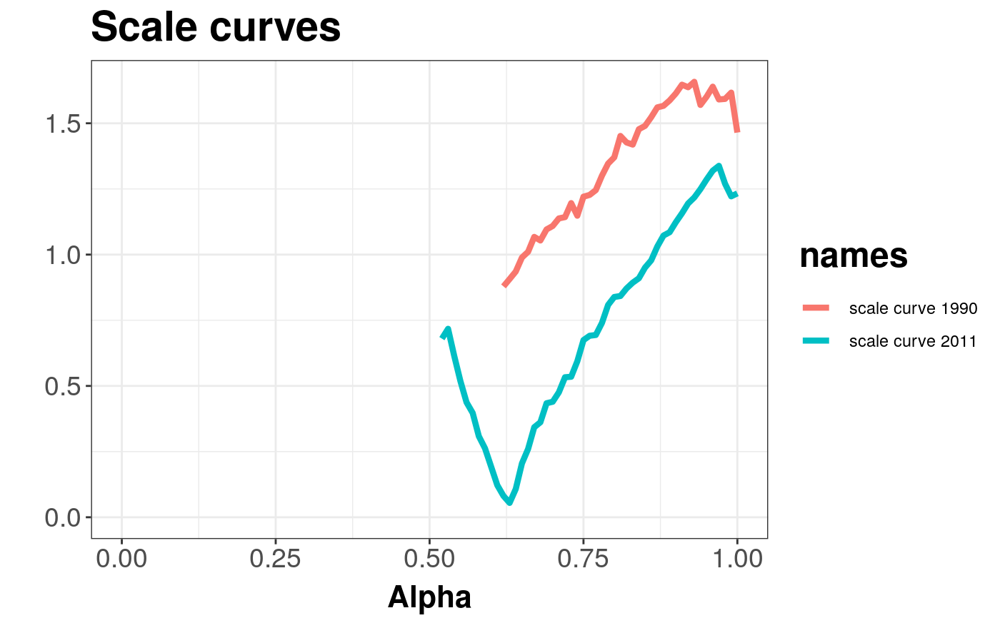

Produces an asymmetry curve estimated from given data.
asymmetryCurve( x, y = NULL, alpha = seq(0, 1, 0.01), movingmedian = FALSE, name = "X", name_y = "Y", depth_params = list(method = "Projection") )
| x | The data as a matrix or data frame. If it is a matrix or data frame, then each row is viewed as one multivariate observation. |
|---|---|
| y | Additional matrix of multivariate data. |
| alpha | An ordered vector containing indices of central regins used for asymmetry curve calculation. |
| movingmedian | Logical. For default FALSE only one depth median is used to compute asymmetry norm. If TRUE --- for every central area, a new depth median will be used --- this approach needs much more time. |
| name | Name of set X --- used in plot legend |
| name_y | Name of set Y --- used in plot legend |
| depth_params | list of parameters for function depth (method, threads, ndir, la, lb, pdim, mean, cov, exact). |
| method | Character string which determines the depth function used. The method can be "Projection" (the default), "Mahalanobis", "Euclidean", "Tukey" or "LP". For details see |
For sample depth function \( D({x}, {{{Z}} ^ {n}}) \), \( {x} \in {{{R}} ^ {d}} \), \( d \ge 2 \), \( {Z} ^ {n} = \{{{{z}}_{1}}, ..., {{{z}}_{n}}\} \subset {{{R}} ^ {d}} \), \( {{D}_{\alpha}}({{{Z}} ^ {n}}) \) denoting \( \alpha \) --- central region, we can define the asymmetry curve \( AC(\alpha) = \left(\alpha, \left\| {{c} ^ {-1}}(\{{\bar{z}} - med|{{D}_{\alpha}}({{{Z}} ^ {n}})\}) \right\|\right) \subset {{{R}} ^ {2}} \), for \( \alpha \in [0, 1] \) being nonparametric scale and asymmetry functional correspondingly, where \( c \) --- denotes constant, \( {\bar{z}} \) --- denotes mean vector, denotes multivariate median induced by depth function and \( vol \) --- denotes a volume.
Asymmetry curve takes uses function convhulln from package geometry for computing a volume of convex hull containing central region.
Serfling R. J. Multivariate Symmetry and Asymmetry, Encyclopedia of Statistical Science, S Kotz, C.B. Read, N. Balakrishnan, B. Vidakovic (eds), 2nd, ed., John Wiley.
Liu, R.Y., Parelius, J.M. and Singh, K. (1999), Multivariate analysis by data depth: Descriptive statistics, graphics and inference (with discussion), Ann. Statist., 27, 783--858.
Chaudhuri, P. (1996), On a Geometric Notion of Quantiles for Multivariate Data, Journal of the American Statistical Association, 862--872.
Dyckerhoff, R. (2004), Data Depths Satisfying the Projection Property, Allgemeines Statistisches Archiv., 88, 163--190.
#>#> #>#> #> #>xi <- c(0, 0) alpha <- c(2, -5) Omega <- diag(2) * 5 n <- 500 X <- mvrnorm(n, xi, Omega) # normal distribution Y <- rmst(n, xi, Omega, alpha, nu = 1) asymmetryCurve(X, Y, name = "NORM", name_y = "S_T(2, -5, 10)")#> Object of class: AsymmetryCurveList#> Warning: Removed 40 rows containing missing values (geom_path).# EXAMPLE 2 data(under5.mort) data(inf.mort) data(maesles.imm) data1990 <- cbind(under5.mort[, 1], inf.mort[, 1], maesles.imm[, 1]) data2011 <- cbind(under5.mort[, 22], inf.mort[, 22], maesles.imm[, 22]) as1990 <- asymmetryCurve(data1990, name = "scale curve 1990") as2011 <- asymmetryCurve(data2011, name = "scale curve 2011") figure <- getPlot(combineDepthCurves(as1990, as2011)) + ggtitle("Scale curves") figure#> Warning: Removed 114 rows containing missing values (geom_path).